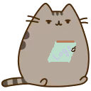
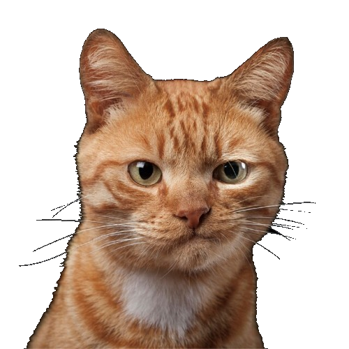

Котолог

Логи,
написанные
бионическими
лапками
Информация о газете:
Екатеринбург, Среда, 22 Октября, 2018
Одностраничное издание
Основано в 1999 году
Премии по физике удостоился Марк-Антуан Фардин,
доказавший, что кошки - это жидкость.
В своем исследовании он объяснил, что в
жидком состоянии вещество занимает определенный
объем и принимает форму емкости, в которой
находится, объяснив, таким образом, свою теорию о котах.
В КэтТаун срочные новости! Пост главы города-государства
теперь занимает рыжий кот. Город будет процветать под правительством
нового лидера ближайшие четыре года.

Известно, что кандидатов мяу было
не много - Котальд и Мышальд. Второй,
к сожалению, не успел опубликовать свою
предвыборную программу и загадочно исчез.
Расследование по исчезновению ведется лучшими специалистами.
Коточеные выяснили, почему человеки боятся темношерстных котов,
переходящих дорогу.
Оказывается, черная шерсть ассоциируется у людей с
жестокостью, злостью и депрессией. Черные коты всего мира
нашли решение проблемы - теперь они красятся в розовый.
Мои кошачьи чувства оскорблены расизмом этих человеков
, - заявил Кот Арнольд, депутат местной Котовской Думы
Стран1ца повреждехна,
приносис изБинения за д0ставленные мяу

Предприятие базируется в Остине и занимается строительством
с использованием фирменного 3D-принтера Vulcan, печатающего
цементными смесями. В марте этого года Icon завершила работу
над 3D-печатным демонстрационным домиком со всеми удобствами.
На печать несъемной опалубки стен ушло менее суток, а стоимость
готового здания оценивается примерно в четыре тысячи долларов.
Наша миссия – придумать новый подход к строительству с тем,
чтобы сделать приличное и недорогое жилье доступным людям во
всех уголках мира. Человечество переживает жилищный кризис, и
эту проблему нельзя решить небольшими усовершенствованиями
старых методов. Мы не можем нарадоваться, что нашлись инвесторы,
разделяющие точку зрения Icon – строительной индустрии
требуется радикальная смена парадигм
, – прокомментировал генеральный директор компании Icon Джейсон Баллард.
Фонд Arch Mission в сотрудничестве с Microsoft,
Вашингтонским университетом и компанией Twist Bioscience
включит 10 000 изображений, текст 20 книг и другую
информацию, закодированную на синтетических молекулах ДНК,
в Lunar Library («Лунную библиотеку»).
Миссия по отправке специальной капсулы с архивом на Луну должна
состояться в 2020 году и будет выполнена частной компанией
Astrobotic. Синтез ДНК для проекта произведет компания
Twist Bioscience, кодирование данных будет осуществляться
учеными из Microsoft и Вашингтонского университета.
Предложить свое изображение для кодирования
в ДНК и отправки на Луну может любой желающий
на сайте memoriesindna.com.
Организаторы эксперимента предполагают,
что это должно быть нечто важное, что человек хотел
бы сохранить для будущих поколений.
Начав разработку электромобилей и автономных технологий,
компания Volkswagen столкнулась с серьезной проблемой:
как создать подключенный к Интернету автомобиль,
который позволит водителям беспрепятственно получать
доступ к цифровым сервисам на ходу?
Например, водитель может захотеть продолжить слушать в машине
ту музыку, которую слушал дома, потом переключиться на
конференц-вызов, а потом проверить свой онлайн-календарь.
Получать доступ ко всем этим сервисам в дороге может быть
проблематично, поскольку приложения разных производителей
обычно не очень хорошо взаимодействуют друг с другом.
Мы рады сообщить вам о запуске нового учебного
сайта Microsoft Learn — удобного ресурса для изучения
технологий Майкрософт. Заглядывайте под кат за подробностями!
Наша миссия — открыть новые возможности для каждого
разработчика, архитектора и ИТ-администратора с любым
уровнем подготовки и в любой организации. Оставаться в курсе
последних изменений в нашей отрасли — непростая задача даже
для тех специалистов, которые всегда держат руку на пульсе.
А постоянно отслеживать нововведения, совмещая это с работой
и личной жизнью, практически невозможно. Именно поэтому мы
создали Microsoft Learn — единый удобный сайт, где можно в
произвольном темпе изучить все продукты и службы, доступные
на нашей платформе, с помощью пошаговых инструкций.
В 2016 году мы запустили docs.microsoft.com,
современный портал, где все желающие могут
получить информацию, необходимую для профессионального развития.
Сегодня на сайте доступна техническая документация,
охватывающая весь ассортимент решений Майкрософт
— от HoloLens до Azure. В ближайшие месяцы здесь
появится еще больше ценной технической информации.
Здесь могла быть ваша мяуклама